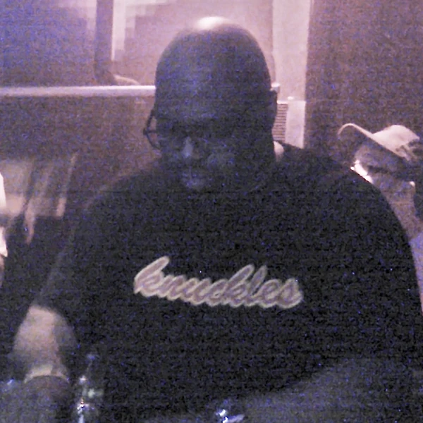
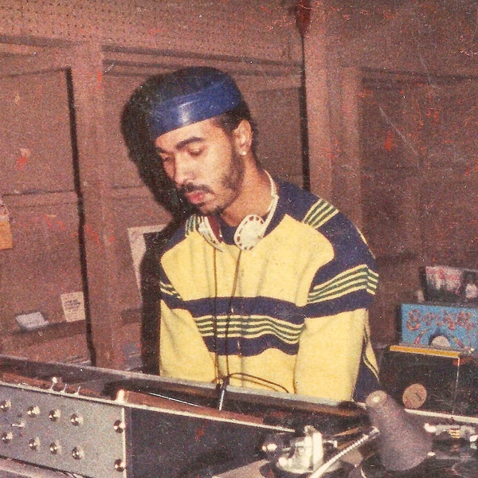
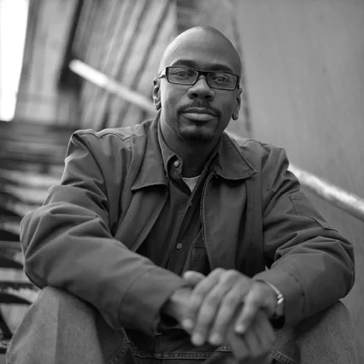
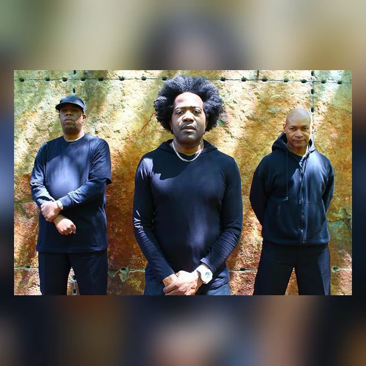
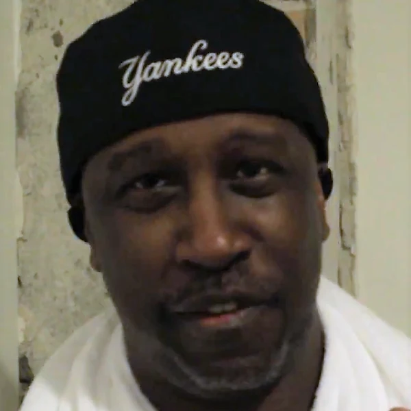
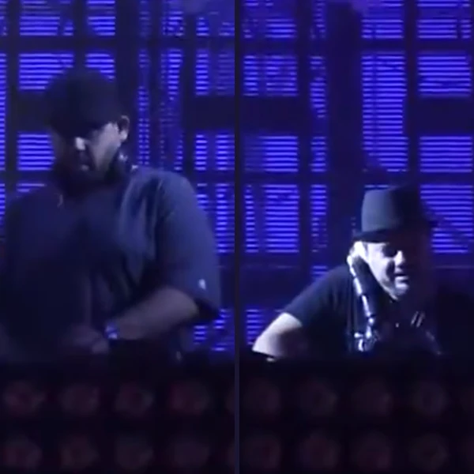

House is a form of Electronic Dance Music built around a steady beat and a rhythm that is meant to keep people dancing. It developed in Chicago in the early 1980s, when club DJs were extending Disco's grooves and experimenting with the electronic equipment becoming available to them. The kick drum usually marks every beat, while basslines, percussion and repeating musical phrases give the rhythm its character. House can be warm and soulful, but it can also be stripped down to little more than drums and a bassline. Vocals are common in some styles and almost absent in others. What ties these approaches together is the importance of the groove and the way a track develops through repetition. House was made for DJs to play as part of a continuous set, so changes often arrive gradually instead of following the structure of a conventional Pop song. It became one of the foundations of modern club music, even if its influence is now so widespread that people often hear it without knowing where it came from.
House is widely understood to take its name from the Warehouse, a Chicago nightclub where DJs played a changing mixture of Disco and other dance music during the late 1970s and early 1980s. People began referring to that selection as House music, and the name followed the sound as it spread beyond the club. This does not mean that a fully formed genre appeared the moment someone put up a sign outside the Warehouse. At first, House described music associated with a particular DJ and dance floor rather than a strict set of production rules. As local producers started making records that reflected what Chicago crowds wanted to hear, the label became more specific. Other stories about the name have circulated, including links to music produced at home, but the Warehouse connection has the strongest historical support. It is a fittingly practical origin for a genre whose identity was established by the people dancing to it before the industry worked out how to sell it.
House emerged from Chicago's underground club scene at a difficult moment for Disco. The music had become a major commercial success during the 1970s, but the backlash against it was often directed at the Black and LGBTQ+ communities associated with its clubs. Those communities did not suddenly stop dancing because the fashion had changed. DJs continued mixing records and finding ways to make the rhythms last longer, while producers began using affordable drum machines and synthesisers to create music specifically for their dance floors. Independent labels and record shops helped this new sound circulate through Chicago and beyond. By the second half of the 1980s, House had reached Britain and other parts of Europe, where it became closely connected with the growing rave scene. Acid House introduced more abrasive electronic bass sounds, while other producers developed soulful or more minimal approaches. The 1990s brought greater commercial success and a growing number of styles. Yet House never became one thing. Local clubs kept developing their own versions, often far removed from whatever happened to be filling the charts.
The most recognisable feature of House is its regular four beat rhythm, with a kick drum landing on each beat. A bassline gives that pulse direction, while claps, hi-hats and other percussion create movement around it. The relationship between the drums and the bass matters more than any one instrument. Many tracks repeat a short chord pattern or vocal phrase for quite a long time, but the arrangement is rarely as static as it first appears. A producer might remove the drums for a few bars, change the bass sound or bring in a new layer just as the groove begins to feel familiar. These small adjustments help the music work in a continuous DJ set. House also draws heavily on the vocal expression and rhythmic feel of Disco, Soul and Funk, although some branches use very little of either. Its tempos are generally less frantic than those of faster electronic dance styles. The result is music that can be simple in its basic pattern without being especially simple in the way it moves.






House was shaped by Black, Latino and LGBTQ+ club communities at a time when many people in those communities were unwelcome in mainstream nightlife. Their clubs were not free from every social problem, but they offered places where dancers could meet on their own terms. That mattered as much as the equipment behind the DJ booth. The music also proved that a major new sound could emerge through small labels, record shops and local parties rather than waiting for a large record company to approve it. As House spread across the world, its rhythms entered Pop and helped establish the modern club and festival industries. That success brought an awkward contradiction. A style developed in marginalised communities became enormously profitable, while its origins were not always acknowledged with the same enthusiasm. The dance floor has often been celebrated as a place where social differences disappear. In practice, questions about access, discrimination and who benefits from the music do not vanish when the lights go down. House helped create spaces where those questions could be challenged, and its history is worth remembering beyond the familiar beat.